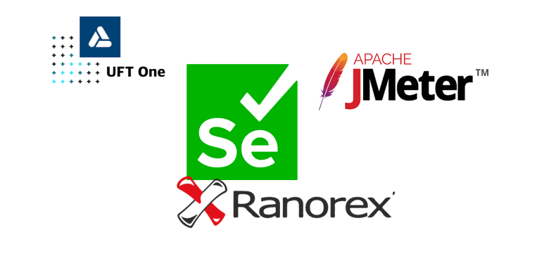

17
April
Tools: The Key to Success for QA Engineers
QA Engineers are responsible for ensuring that software products meet the highest standards of quality, reliability, and functionality. In order to accomplish this goal, they must employ a variety of tools and techniques to assist them in their daily tasks. Without these tools, QA Engineers would struggle to keep pace with the rapidly evolving world of technology, and organizations would suffer as a result.